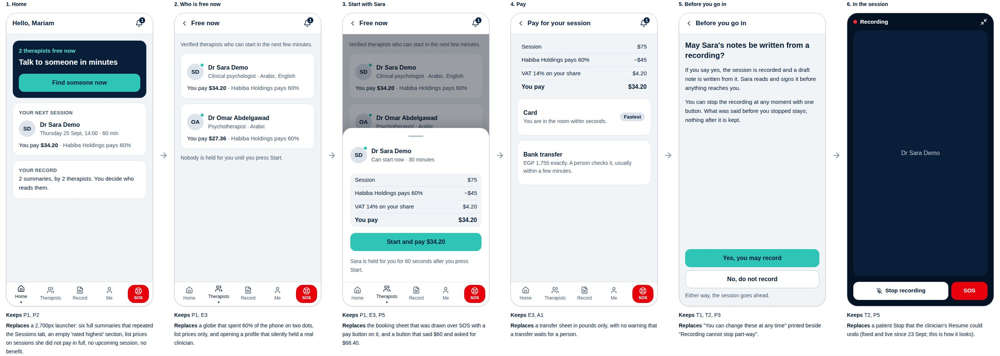
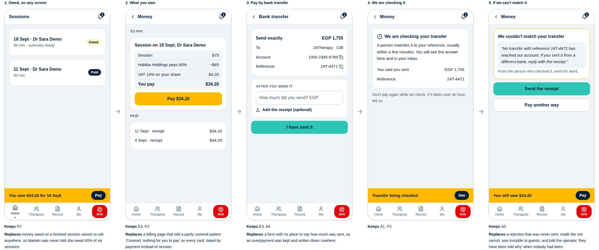
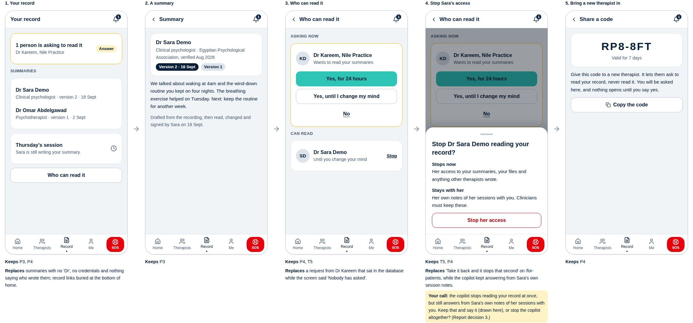
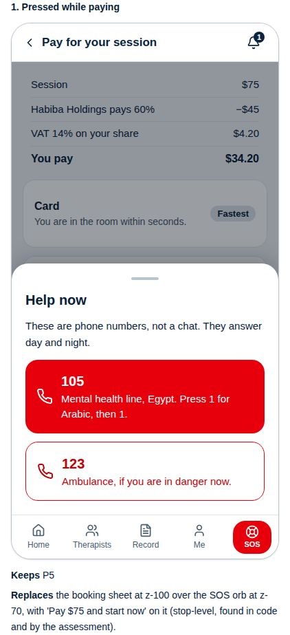
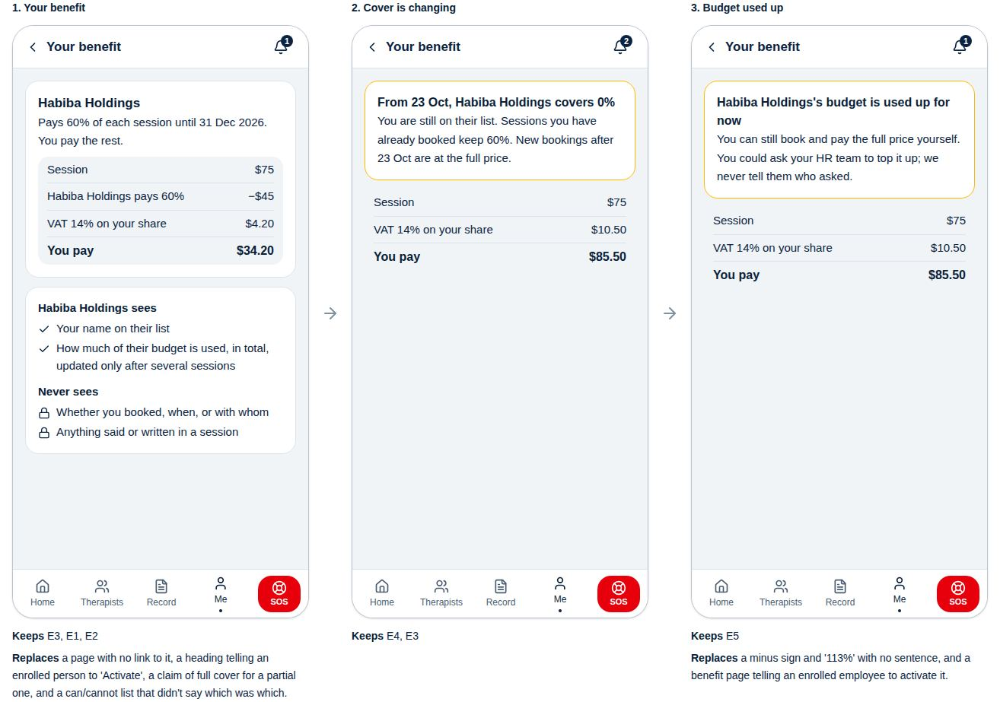
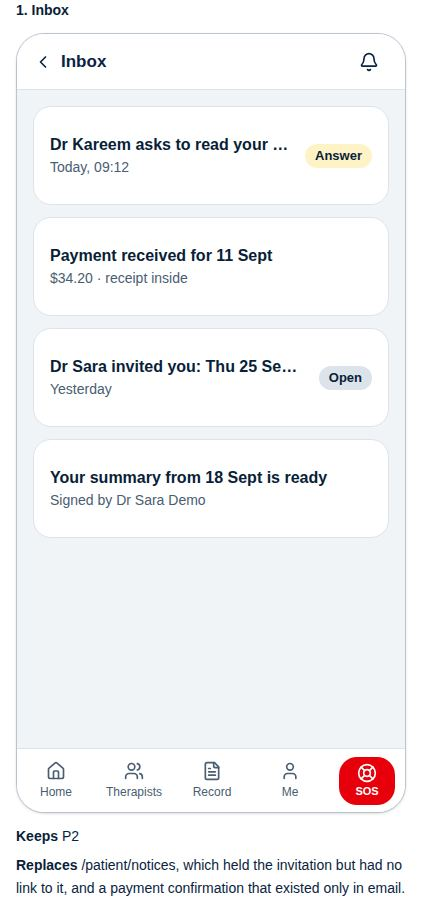
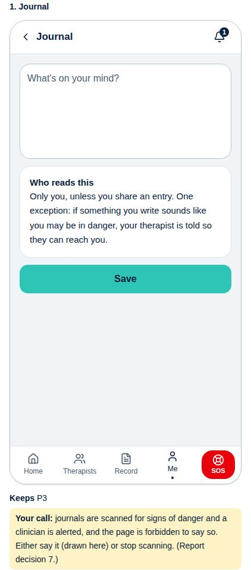

Seven flows, every screen at a phone's 390px width, in English and Arabic. Under each screen: the promise it keeps and what it replaces from the walk. Nothing is built yet. Say yes, no, or change this, flow by flow. Scroll each strip sideways.
Opening the app to talking to somebody. Three taps when covered or paid; card adds one; a transfer waits for a person and says so first.

What you owe is on every screen until paid, in one price block everywhere; a refused transfer says why, word for word, and what to do next.

Summaries under the author's name and credentials, every version kept; anybody asking to read it is shown first.
Your call (report decision 3): when you stop a therapist's access, the copilot stops reading your record but still answers from her own session notes. Drawn: say that plainly. Or stop the copilot entirely?

SOS is in the bottom bar on every screen; its sheet opens above the bar, even in the middle of paying.

The employer screen, now reachable from Me: the real 60/40 share, and two plain lists of what the company sees and never sees.

Everything sent by email or WhatsApp also lands here, each with the one thing to do about it.

Only you read it, and the one exception is said out loud.
Your call (report decision 7): journals are scanned for danger and a therapist alerted. Drawn: say so on the page. Or stop scanning?

Not drawn yet: the therapist page for booking later, homework, questionnaires, account and sign-in. They follow your answers on these seven. The session room is drawn with the clinician's workspace.